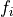
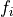
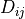
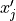

1. Linear and Bilinear forms in Numerical Geolab¶
1.1. General formulation of the weak form for a multiphysics coupled solid mechanics problem¶
Numerical Geolab, implements a general incremental variational form for the solid mechanics problems involving generalized continua taking advantage of a generalized Voigt-type notation. Moreover, the variational form provided below takes into account multiphysics couplings and transient terms that can result from balance equations.
1.1.1. General variational formulation in generalized Voigt form implemented in Numerical Geolab -No transient terms¶
We consider the incremental formulation of a solid mechanics problem in material inelasticity. In such a case the weak form of the force and momentum balance equations in Voigt form to be solved by nGeo are the following:
where is the Voigt vector of generalized stresses,  is the Voigt vector of generalized strains,  is the generalized volumic force vector applied on the volume of the body and
is the Voigt vector of generalized strains,  is the generalized volumic force vector applied on the volume of the body and  is the generalized traction vector applied at the surface
is the generalized traction vector applied at the surface  of the domain. We use the symbol, in order to denote the testfunction fields necessary for deriving the weak form.
of the domain. We use the symbol, in order to denote the testfunction fields necessary for deriving the weak form.
We note that this formulation is general enough to contain also the the mass and energy balance diffusion equations at steady state (absence of the transient terms). %We use the symbol $({cdot})$ to denote the generalized vectors containing the fluxes, gradients and values of the physical quantities that are coupled to the generalized stresses, strains and forces of the mechanical problem respectively. We consider the incremental solution of a solid mechanics problem in material inelasticity (see [ZIE]). During the iteration of the $m$ increment, in the case where no transient terms are considered, the general incremental variational form used by nGeo is the following:
Zienkiewicz and R. L. Taylor. The finite element method for solid and structural mechanics. Elsevier, 2005

where, the term of the left hand side contains the new generalized strain increment and the generalized inelastic material matrix . The terms in the right correspond to the residual at the k+1 iteration of the m increment. In the residual, we take into account the difference between the external generalized volumic and surface forces at the end of the increment versus the internal work done by the internal generalized stresses after the material update algorithm at the k+1 iteration.
In the case of a classical Cauchy continuum, the terms correspond to the stress vector,
and the kinematically admissible energy conjugate strain vector.
![{\psi}_{j}=\left[\varepsilon_{11},\varepsilon_{22},\varepsilon_{33},\varepsilon_{23},\varepsilon_{13},\varepsilon_{12}\right]^T](_images/math/48296d7833309c156923ab82a5d4377c67fbfc7d.png) respectively. Considering the terms of the
external work , they correspond to the vectors of volumic forces and surface tractions respectively. The term corresponds to the displacement vector field.
respectively. Considering the terms of the
external work , they correspond to the vectors of volumic forces and surface tractions respectively. The term corresponds to the displacement vector field.
1.1.2. Implementation of generalized continua¶
We note that we can apply the weak from of equation multiphysics variational formulation also to the case of generalized continua, i.e continua with microstructure (see [GERM]). More specifically, in a medium with microstructure, we consider that each material point has its own micro structure, where is the center of mass. The displacement of a point close to can then be described by the Taylor expansion of the displacement in a small distance  around . Thus, we can write:

where without loss of generality can be assumed symmetric w.r.t. the indices . The resulting principle of incremental virtual work that gives rise to the appropriate balance equations for the nth-order micromorphic continuum is given by:
![&P_{int}+P_{ext,c}+P_{ext,d}=0,\nonumber\\
&P_{int}=-\int_\Omega \Delta \tau_{ij}v_{i,j}-(\Delta\tau_{[ij]}\chi_{ij}+\Delta\tau_{ijk}\chi_{ijk}+...)+(\Delta b_{ijk}\kappa_{ijk}+\Delta b_{ijkl}\kappa_{ijkl}+...)d\Omega,\nonumber\\
&P_{ext,d}=\int_\Omega \Delta {f}_i v_i +\Delta\Psi_{ij}\chi_{ij}+\Delta\Psi_{ijk}\chi_{ijk}+...d\Omega\nonumber\\
&P_{ext,c}=\int_\Gamma \Delta {t}_i {v}_i+\Delta M_{ij}\chi_{ij}+\Delta M_{ijk}\chi_{ijk}+...d\Gamma,\nonumber\\
&\kappa_{ijk}=\chi_{ij,k},\text{ and } \kappa_{ijkl}=\chi_{ijk,l},\; ...\;,](_images/math/517c1c72a74d3b750113b3ce7d233b7643b8225d.png)
where the symbol indicates differentiation with respect to the spatial dimension of the problem, denotes the antisymmetric part of the tensor . The quantities are the generalized volumic forces and the generalized traction forces at the boundary of the domain. We can rewrite equation generalized continua variational formulation into multiphysics variational formulation by setting:
![&{g}_j=\left[\tau_{pq},\tau_{[pq]}, \tau_{pqr}, b_{pqr}, b_{pqrm}, ...\right]^T_{(1\times N_1)},\nonumber\\
&{\psi}_j=\left[v_{p,q},\chi_{[pq]}, \chi_{pqr}, \kappa_{pqr}, \kappa_{pqrm}, ...\right]^T_{(1\times N_1)},\nonumber\\
&{f}_i=\left[f_p,\Psi_{pq},\Psi_{pqr},...\right]^T_{(1\times N_2)},\nonumber\\
&{t}_i=\left[t_p,M_{pq},M_{pqr},...\right]^T_{(1\times N_2)},\nonumber\\
&{v}_i=\left[v_p,\chi_{pq},\chi_{pqr},...\right]^T_{(1\times N_2)},\nonumber\\
& j=1,...,N_1\text{ with } N_1=pq\left[(1+r)+rm(1+...)+...\right],\nonumber\\
& i=1,...,N_2\text{ with } N_2=p\left[(1+q)+rq(1+...)+...\right].](_images/math/16e1dd598159b77d9d4ac128b91242b0eeac305d.png)
In the case of generalized continua, the terms correspond to the generalized stress vector, and the kinematically admissible energy conjugate generalized strain vector as presented in [GERM] . Likewise the terms of the external work , they correspond to the vectors of generalized volumic forces and the generalized surface tractions respectively.
When a first order micromorphic (Cosserat) continuum is used, generalized stress and strain asymmetry ensues, and the user needs to populate the generalized stress and strain vectors by the full components of the generalized stress, couple stress and strain and curvature quantities. In the 3D case of the equilibrium this leads to a vector for the generalized stresses and strains . For the generalized forces, moments and displacements the vector dimensions are containing , and .
1.1.3. Implementation of transient terms -THMC couplings¶
The consideration of multiphysics couplings results in the use of coupled diffusion equations. This is the case, for instance, when THMC couplings are implemented. In this case, the energy balance and mass balance equations need to be taken into account for the description of the fields of temperature, pore fluid pressure and concentration of chemical quantities. The incremental weak form of the system of the energy, mass, and chemical potential balance equations is given by application of the Galerkin procedure for the total system of equilibrium equations:
![\frac{1}{\Delta t}\int_{\Omega} \Delta T \tilde{T}d\Omega+\frac{1}{\Delta t}\int_{\Omega} \Delta P \tilde{P}d\Omega &+\frac{1}{\Delta t}\sum_{i=1}^{N}\int_{\Omega}\Delta Q_i\tilde{Q}_id\Omega\nonumber\\
&-\int_{\Omega}c_{th}\Delta T_{,i} \tilde{T}_{,i}d\Omega-\int_{\Omega}c_{hy}\Delta P_{,i}\tilde{P}_{,i}d\Omega-\sum_{i=1}^{N}\int_{\Omega}c_{qi}\Delta Q_{i,j}\tilde{Q}_{i,j}d\Omega\nonumber\\
&-\int_{\Omega}C_T\tilde{T}d\Omega-\int_{\Omega}C_P\tilde{P}_{,i}d\Omega-\sum_{i=1}^{N}\int_{\Omega}C_{Qi}\tilde{Q}_{i}d\Omega\nonumber\\
&-\int_{\Gamma}\Delta Q^{th}_{i}\tilde{T}_{,i}d\Gamma-\int_{\Gamma}\Delta Q^{hy}_i\tilde{P}_{,i}d\Gamma-\sum_{i=1}^{N}\int_{\Omega}\Delta Q^q_{i,j}\tilde{Q}_{i,j}d\Omega\nonumber\\
&=0,](_images/math/ac41cfa172984527684b20e4c5a102017123f07d.png)
where are the coupling terms between the diffusion equations and the generalized linear and angular momentum balance equations. We note here that the coupling terms are problem specific and as such they will be subject to user modification. We note that we can treat the temperature, pore fluid pressure and chemical concentration fields as extra unknowns to be appended on the fields of the generalized unknown displacements.
The right part of the diffusion equations, which shows a differentiation with respect to time of the unknown fields, can be added in the weak form by the multiplication of the vector
of unknown increments by a mapping vector containing the values 0 and 1 depending on the presence of a time derivative in the system of equations. In the above case the mapping vector will take the form .
We complete the numerical calculation of the derivative by dividing with the time increment  .
The final incremental weak form of the problem is then given by:
.
The final incremental weak form of the problem is then given by:
where is a third order tensor denoting the Hadamard product, i.e. when and 0 otherwise. Furthermore, is the time derivative mapping vector. In the external forces the volumic and surface fluxes need to also be appended.
1.2. Numerical Implementation in nGeo¶
1.2.1. Implementation of the weak formulation¶
We focus now on the two methods setVarForm(), setVarFormTransient() that construct the algebraic system to be solved based on the weak form of the
system of PDEs, and using the UFL symbolic form language. These two methods contain the weak form for the two general cases of problems currently available in Numerical
Geolab, i.e. the case of quasistatic and transient analyses. In both cases the Voigt form for the unknowns of the problem is used for the construction of the weak form.
def setVarForm(self):
"""
Set Jacobian and Residual (Voigt form) default version
"""
n=FacetNormal(self.mesh)
ds=Measure("ds", domain=self.mesh,subdomain_data = self.boundaries,metadata=self.metadata)
Jac=inner(dot(self.to_matrix(self.dsde2),self.epsilon2(self.u)),self.epsilon2(self.v))\
*dx(metadata=self.metadata)
Res = -inner(self.sigma2,self.epsilon2(self.v))*dx(metadata=self.metadata)
for NM in self.NMbcs:
Res+= dot(NM.ti,self.v)*ds(NM.region_id)
for NMn in self.NMnbcs:
Res+=NMn.p*dot(n,as_vector(np.take(self.v,NMn.indices)))*ds(NMn.region_id)
for RB in self.RBbcs:
Res+= dot(np.multiply(RB.ks,self.u),self.v)*ds(RB.region_id)
Jac+=self.feform.setVarFormAdditionalTerms_Jac(self.u,self.Du,self.v,self.svars2,\
self.metadata,0.,self.to_matrix(self.dsde2))
Res+=self.feform.setVarFormAdditionalTerms_Res(self.u,self.Du,self.v,self.svars2,\
self.metadata,0.)
return Jac, Res
def setVarFormTransient(self):
"""
Set Jacobian and Residual (Voigt form) default version for transient problems
"""
n=FacetNormal(self.mesh)
ds=Measure("ds", subdomain_data = self.boundaries)
Jac = (1./self.dt)*inner(as_vector(np.multiply(self.dotv_coeffs(),self.u)) , self.v)*dx(metadata=self.metadata)
Jac+= (1./self.dt)*self.dt*inner(dot(self.to_matrix(self.dsde2), self.epsilon2(self.u)),self.epsilon2(self.v))*dx(metadata=self.metadata)
Res = -(1./self.dt)*inner(as_vector(np.multiply(self.dotv_coeffs(),self.Du)), self.v)\
*dx(metadata=self.metadata)
Res+= -(1./self.dt)*self.dt*inner(self.sigma2,self.epsilon2(self.v))\
*dx(metadata=self.metadata)
for NM in self.NMbcs:
Res+= (1./self.dt)*self.dt*dot(NM.ti,self.v)*ds(NM.region_id)
for NMn in self.NMnbcs:
Res+= (1.self.dt)*self.dt*NMn.p*dot(n,as_vector(np.take(self.v,NMn.indices)))\
*ds(NMn.region_id)
for RB in self.RBbcs:
Res+= (1./self.dt)*self.dt*dot(np.multiply(RB.ks,self.u),self.v)*ds(RB.region_id)
Jac+=self.feform.setVarFormAdditionalTerms_Jac(self.u,self.Du,self.v,self.svars2,\
self.metadata,self.dt,self.to_matrix(self.dsde2))
Res+=self.feform.setVarFormAdditionalTerms_Res(self.u,self.Du,self.v,self.svars2,\
self.metadata,self.dt)
return Jac, Res
The calculation of the problem’s jacobian matrix (variable Jac) takes places with the help of the automatic differentiation feature of the UFL language.
More specifically, automatic differentiation takes place in every term containing the integral of functions that have the {Testfunction() and Trialfunction() as their arguments
(terms with variables u,v in the functions presented above. The evaluation of both the linear and bilinear forms of the residual and its jacobian, respectively,
is performed via Gauss quadrature rule, at the Gauss point of each finite element. We obtain access to the Gauss points of the finite element model by specifying the
metadata variable inside the integration measure. The quantities describing the stress field (self.sigma2) and elastoplastic matrix components (self.dsde2) correspond to vectorfields
that are evaluated at the Gauss points and the quantities referring to the nodal output of the incremental displacement field, v `
and the output of the :py:meth:`Testfunction(), u are evaluated at the nodes of the finite element model and then projected to the Gauss points via the self.epsilon2() method.